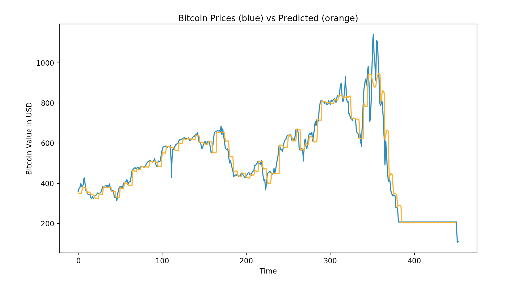
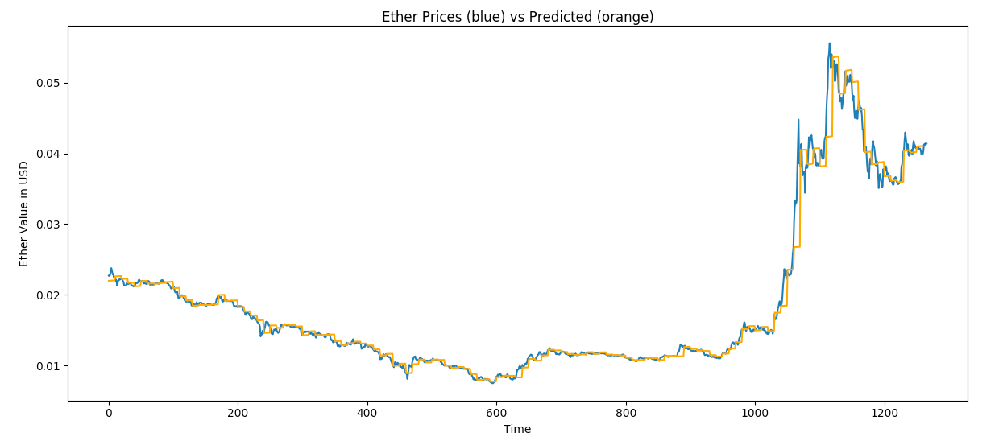

For this forecasting, we used a rolling window ARIMA method to forecast future prices. We use all the available history of prices to forecast the prices in the next 10 timesteps. Then after 10 timesteps, we add the true prices from these past ten timesteps to our history, and build a new ARIMA model using the updated history to forecast the next 10 timesteps after that. Each timestep is one day in our dataset. The Bitcoin price dataset came from Quandl, and the Ether dataset came from Poloniex.
 